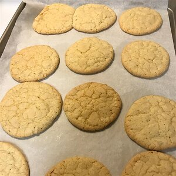

Sugar Cookies Recipe

Chewy Sugar Cookies
Sugar Cookies are a quick and easy way to make your children smile
Let's see how to prepare them right...
Ingredients
- 2 ¾ cups all-purpose flour
- 1 teaspoon baking soda
- ½ teaspoon salt
- 1 ¼ cups margarine
- 2 cups white sugar
- 2 eggs
- 2 teaspoons vanilla extract
- ¼ cup white sugar for decoration
Steps
- Preheat the oven to 350 degrees F (175 degrees C). In a medium bowl, stir together the flour, baking soda, and salt; set aside.
- In a large bowl, cream together the margarine and 2 cups sugar until light and fluffy. Beat in the eggs one at a time, then the vanilla. Gradually stir in the dry ingredients until just blended.
- Wrap dough with plastic wrap and chill for 30 minutes to 1 hour.
- Roll the dough into walnut-sized balls and roll the balls in remaining 1/4 cup of sugar. Place cookies 2 inches apart onto ungreased cookie sheets and flatten slightly.
- Bake for 8 to 10 minutes in the preheated oven, until lightly browned at the edges. Allow cookies to cool on baking sheet for 5 minutes before removing to a wire rack to cool completely.